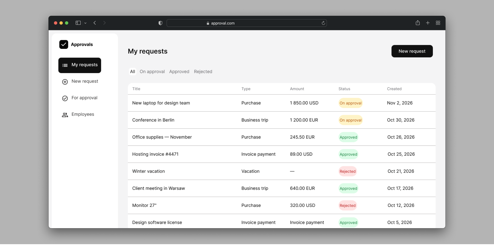
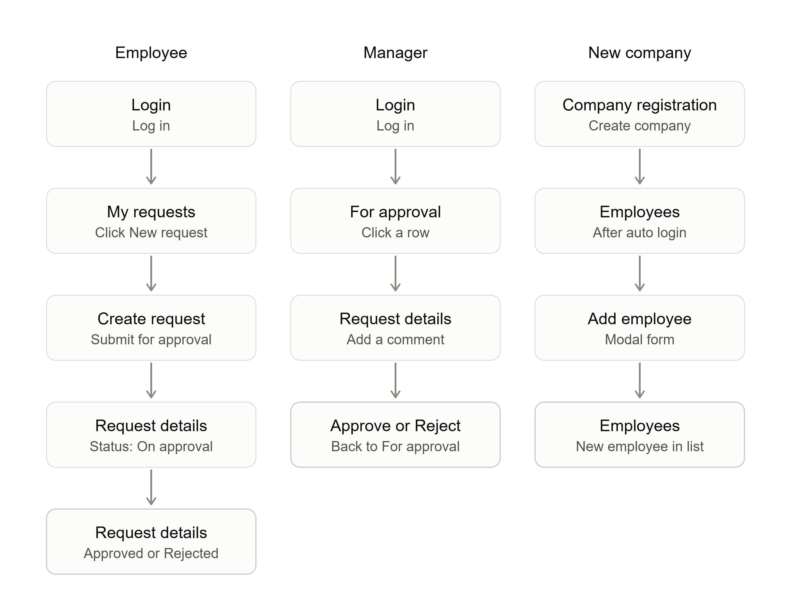
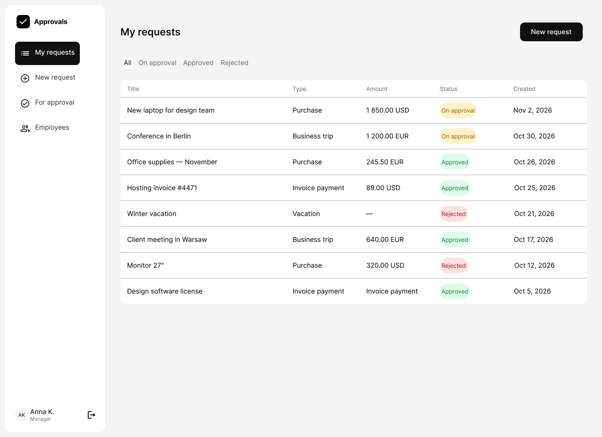
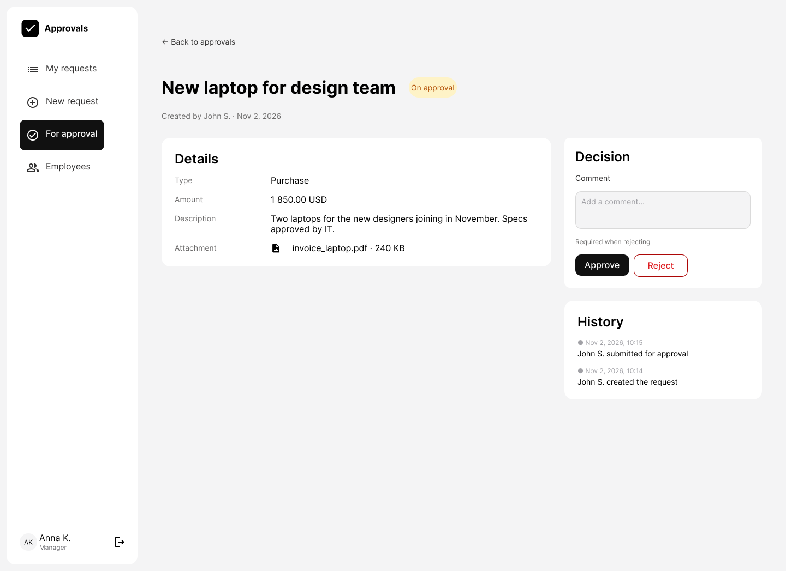

The task was to define which screens an MVP needs, how two roles move between them, and to draw the wireframes.
An employee creates a request, a manager approves it. One approval step: On approval → Approved or Rejected.
An MVP for company expense approvals: employees create requests, managers approve or reject them, and every step is recorded.

UX/UI design
Screen list, user flows, wireframes, UI
Figma, FigJam
Solo project
The task was to define which screens an MVP needs, how two roles move between them, and to draw the wireframes.
An employee creates a request, a manager approves it. One approval step: On approval → Approved or Rejected.
9 screens · 3 user flows
Login → My requests → New request → Request details.
Login → For approval → Request details → Approve or Reject.
Registration → Employees → Add employee.
Each screen has its empty, loading and error states. Then I took two key screens to final UI in a calm monochrome style, where colour appears only for statuses.




The file has the full screen list, flows for both roles, wireframes with every state and two screens in final UI, enough for developers to start building the MVP.